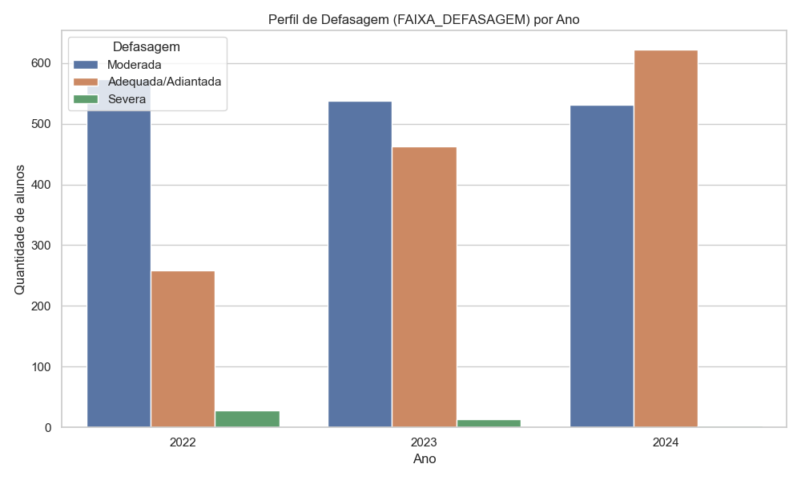

Bem-vindo ao Radar Educacional
!!! info "O que é este projeto?" O Radar Educacional é uma plataforma de inteligência analítica desenvolvida para a Associação Passos Mágicos. O sistema transforma indicadores educacionais e psicossociais em modelos preditivos para identificar alunos em risco de defasagem, permitindo intervenções precoces e personalizadas.

:rocket: Diferenciais da Solução
Diferente de relatórios estáticos, o Radar Educacional entrega contexto e predição.
- :material-target: **Diagnóstico de Precisão**
Identificação imediata de alunos com defasagem severa através do Modelo Transversal, priorizando o atendimento da ONG.
- :material-crystal-ball: **Previsão de Ciclo (Longitudinal)**
Algoritmo diferencial que utiliza dados históricos para antecipar o risco de defasagem para o próximo ano letivo.
- :material-chart-multiline: **Visão Multidimensional**
Integração de índices acadêmicos (IDA), engajamento (IEG) e fatores psicossociais (IPS) para uma visão 360º do aluno.
:compass: Como navegar nesta documentação?
| Se desejas... | Vai para... |
|---|---|
| Explorar Insights | Análise de Dados (EDA) para entender os drivers de desempenho. |
| Entender a IA | Modelagem e Métricas para detalhes sobre o XGBoost e performance. |
| Utilizar a App | Guia do Utilizador para aprender a navegar no Dashboard Streamlit. |
:hammer_and_wrench: Estrutura Tecnológica
A solução foi construída com foco em escalabilidade e reprodutibilidade:
- Linguagem: Python 3.10+
- IA/ML: XGBoost Classifier (Modelos Transversal e Longitudinal)
- Interface: Streamlit Community Cloud
- Engenharia: Pipeline de tratamento de dados histórico (2022-2024)
- Documentação: MkDocs Material (Engine fev/2026)
!!! success "Impacto Real" Este projeto foi desenhado para apoiar a meta da Passos Mágicos de universalizar a educação de qualidade em Embu-Guaçu, reduzindo a evasão através da ciência de dados.